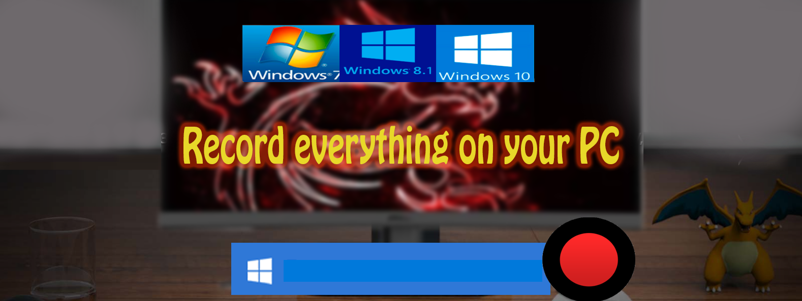
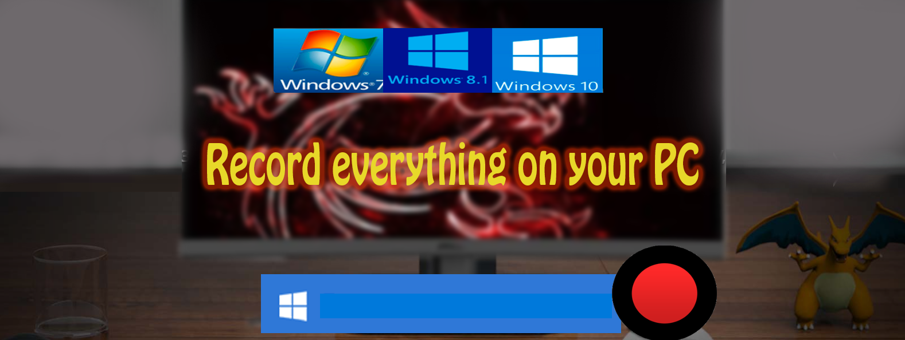

FreePrograms

Bandicam — это лучшая программа для записи экрана, игр и видеоустройств. Bandicam — это компактная программа записи экрана для Windows, которая может записывать все, что происходит на экране ПК, в формате высококачественного видео. Также можно выполнять запись определенной части экрана или игр, использующих графические технологии DirectX/OpenGL/Vulkan. Bandicam поможет вам сделать запись игры с высоким коэффициентом сжатия, сохраняя при этом близкое к оригиналу качество и обеспечивая более высокую производительность по сравнению с другими программами записи с подобными функциями.
 
